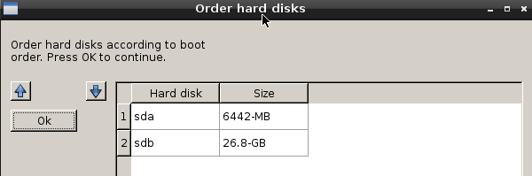
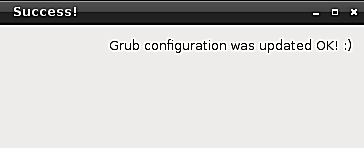

Actualizar fichero de configuración de GRUB - Rescapp - Documentation
-
Paso 1Rescapp busca las particiones que tienen en ellas el archivo: /etc/issue basandose en la información encontrada en el archivo /proc/partitions.
-
Paso 2Si esas particiones se encuentran Rescapp le presenta las particiones que tienen en ellas el siguiente archivo: /etc/issue. Al mismo tiempo se le pregunta:
Which partition?. Es decir, qué partición su partición de Gnu/Linux principal. Se le supone elegir su distribución de Gnu/Linux principal (probablemente sólo verá una) y pulsar el botón OK.

-
Paso 3Rescapp busca los discos duros presentes en su sistema basandose en la información encontrada en el archivo /proc/partitions.
-
Paso 4Se le muestra:Order hard disks according to boot order. Press OK to continue.. Eche un vistazo a los discos duros y sus tamaños. Ordenelos de acuerdo al orden de arranque de la BIOS y pulse OK.

-
Paso 5Rescapp con toda la información obtenida va a crear un archivo device.map en su instalación de Gnu/Linux (que va a ser borrada más tarde) e intentará actualizar el archivo de configuración de grub en su disco duro seleccionado gracias al comando update-grub de la propia distribución de Gnu/Linux.Por favor espere. Actualmente (Rescatux 0.23) este paso tarda algún tiempo pero no aparce ningún mensaje que indique que hay que esperar.
-
Paso 6Se le informa del proceso de actualización del archivo de configuración de grub.El mensaje se explica a sí mismo. Bien obtiene:Success! Grub configuration was updated ok! :) (Ha ido bien.)oFailure! Grub configuration update went wrong! :((Algo ha ido mal)

-
Paso 7Un fichero de log llamado: update-grub.log.txt puede encontrarse en el directorio logs del escritorio.